Sximo Builder PHP Web Application Generator
- created: 05/26/2014
- latest update: 09/16/2014
- by: Mangopik
- email: kangopik@gmail.com
Getting Started
Introducing, The Real framework environment to Build Backend Administrator & Frontend for real Internet / Intranet web application with a tons of additional cms plugin possibility.
SximoBuilder is a powerful automation tool that can generate a full set of PHP quickly from MySQL. You can instantly create web sites that allow users to view, edit, search, add and delete records on the web. SximoBuilder is designed for high flexibility, numerous options enable you to generate PHP applications that best suits your needs. The generated codes are clean, straightforward and easy-to-customize. SximoBuilder can save you tons of time and is suitable for both beginners and experienced develpers alike
Feature
Our experience with building application using PHP & MySQL more than 5 years making us know about minimal common feature and routine proccess.
Sximo Builder Integrated module & Function
|
Sximo Builder CRUD Generator
|
Form Features
|
Version 3.1 Changelog
- fixed : dropdown Issue on column search #2
- Fixed : Reset Password issue #5
- Fixed : Missing assignment $message value for register when auto activation #14
- Fixed : Add icon to submenu ( menu management ) #16
- Fixed : Little issue @ Email template #18
- Fixed : TextArea automatically added paragraf #33
- Fixed : Error select combo filter #35
- Fixed : frontend multilang menu and link issue for submenu #39
- Fixed : error while remove data if no rows selected #40
- Fixed : Set default languange is not working #32
- Enhancement : Add select option for language at login page
- Enhancement : add button for remove uploaded file/picture #38
- Enhancement : add new javascript notification #41
- Enhancement : Disable , enable debug mode #41
- Enhancement : Fix expired session error at config and module page
Version 3.0 Changelog
- Fixed Login Issue
- Fixed Some Broken link at breadcrumb issue
- Fixed users list on same level issue
- Fixed Token Missmatch issue
- Fixed Reset password broken link
- Fixed Remove module issue
- Removing authen required validation
- Fixed Public grid helpers issue
- Fixed Limited checkbox or radio custom value from 10 to unlimited
- Added new PDF library bundle ( only available for ajax add on )
Version 2.9 Changelog
- Faster than old version
- Fix Security issue at comboselect , combotable , combofield
- Fix Select custom issue
- Fix Total disabled frontend
- Fix Master detail Add / view / filter / delete
- Fix column Search with custom value
- Added new feature : Select multiple ( Only for Custom value )
- Added new feature : Form : Select display with 3 field
( example : title + firstname + lastname ) - Added new feature : Grid : Select display with 3 field
( example : title + firstname + lastname ) - Added New feature : New Backend Template & theme
Server & PHP Requirment
To make Sximo Builder running on your , you need to make sure your server match with minimum requirment
- Apache, nginx, or another compatible web server.
- PHP 5.3.7 >> Higher
- MySQL Database server
- Module Re_write server
- PHP_CURL Module Enable
- Realtime Internet Connection ( Module Management )
Installation
Preparing Installation
- Download ZIP package and unzip it.
- In unzipped folder you will find folder directory like bellow.
- source
- database
- documentation
- Create app directory on your web directory server
- Simply put all files inside directory
sourceto your app folder.
Create new database installation
You need to create new database , you can use phpmyadmin or any mysql databse tools such maestro , sqlyog etc
---
After new database created , now import database/database.sql file into your new database
Configuration Installation
1. Open protected/app/config/app.php file using your favorite php editor
2. Setting Url And Licence
'url' => 'http://127.0.0.1/yourapp',
3. Setting Database Info
Open protected/app/config/database.php file using your favorite php editor
'mysql' => array( 'driver' => 'mysql', 'host' => 'localhost', 'database' => 'dbname', 'username' => 'dbuser', 'password' => 'dbpassword', 'charset' => 'utf8', 'collation' => 'utf8_unicode_ci', 'prefix' => '', ),
4. Access your application
- Now access your application via your favorite browser
http://127.0.0.1/myapp - Default Login :
Email Address :superadmin@mail.com
Password :password - Awesome your application is ready now !
5. Files Folder permission
please make sure to set permission to 0775 at following file and folder
- /protected/app/controllers/
- /protected/app/models/
- /protected/app/views/
- /setting.php
- /protected/app/storage/logs/
- /protected/app/storage/views/
- /protected/app/storage/sessions/
Setting Up Application
After your successfull install your application , now you need to setting your app .
Log to your application and go to :
Go to : Control Panel -> Setting
General Setting
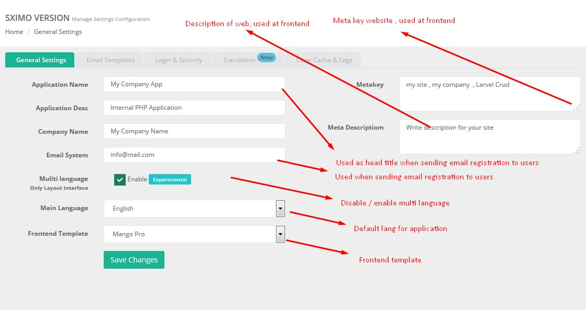
Email Template
Email template used for sending activation link and forgot password info. You only need to change text as you desire ,but do not delete link codeLogin And Security
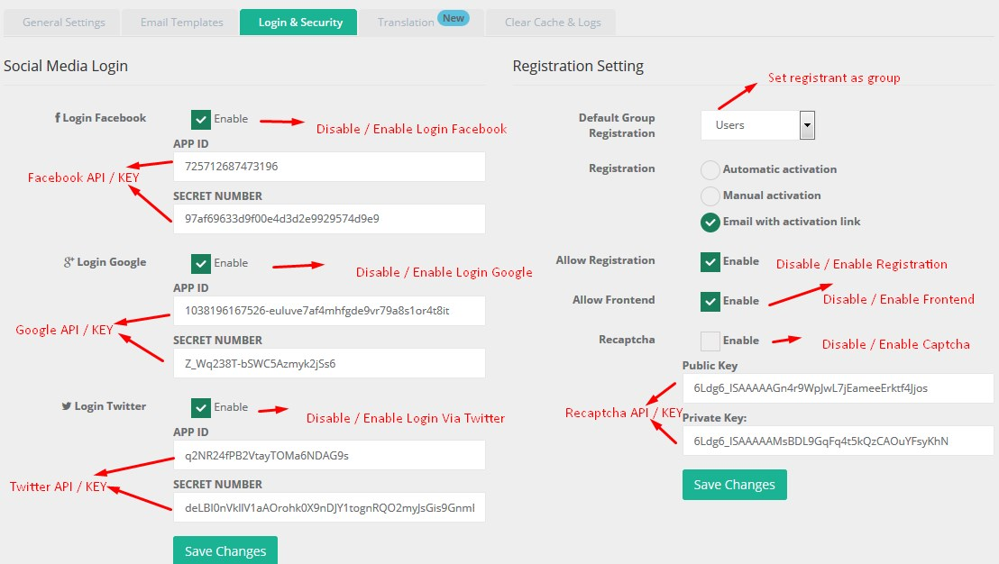
Setting Up Social Network
Before you activate social media login , you need to register your webste and get API ID and SECRET . Please follow instruction for each account ID
GOOGLE +
- Go To : https://code.google.com/apis/console/
- Go to API Access under API Project. After that click on Create an OAuth 2.0 client ID to create a new application.
- A pop-up named "Create Client ID" will appear, fill out any required fields such as the application name and description.
- Click on Next.
- On the popup set Application type to Web application and switch to advanced settings by clicking on (more options).
- Provide this URL as the Callback URL for your application: http://mywebsite.com/user/google?hauth.done=Google
- Once you have registered, copy and past the created application credentials (Client ID and Secret) into the setting page.
- Go to https://developers.facebook.com/apps and create a new application by clicking "Create New App". 2. Fill out any required fields such as the application name and description.
- Put your website domain in the Site Url field.
- Once you have registered, copy and past the created application credentials (Client ID and Secret) into the setting page.
- Go to https://dev.twitter.com/apps and create a new application.
- Fill out any required fields such as the application name and description.
- Put your website domain in the Website field.
- Provide this URL as the Callback URL for your application: http://mywebsite.com/user/twitter?hauth.done=Twitter
- Once you have registered, copy and past the created application credentials (Client ID and Secret) into the setting page.
Page CMS(Static Page)
Page CMS allow you to create page for frontend ( Public ) or Private. This can be put for creating , contact , about us , service , TOC etc
Before you begin creating pages , you have to know that SXIMO create file everytime you create pages , its mean you have full control to insert everything in content such tag php , css , exclude javscript
Go to : Control Panel -> Page CMS
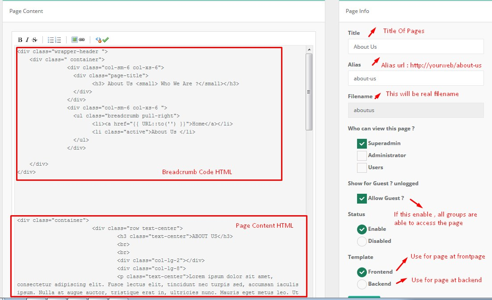
Bootstrap Element
We'are really recomended that you learning twitter bootstrap css framework to use page editor . Sximo fully supported to use all bootstrap html and css syntac , all elements from bootsrap can be use to design your own page.Laravel Blade Syntac
Page CMS file are using Blade template engine from laravel framework , this mean you can use blade syntac inside your pageBreadcrumb Code HTML
Frontend
<div class="wrapper-header ">
<div class=" container">
<div class="col-sm-6 col-xs-6">
<div class="page-title">
<h3> About Us <small> Who We Are ?</small></h3>
</div>
</div>
<div class="col-sm-6 col-xs-6 ">
<ul class="breadcrumb pull-right">
<li><a href="{{ URL::to('') }}">Home</a></li>
<li class="active">About Us </li>
</ul>
</div>
</div>
</div>
Backend
<div class="page-content row">
<!-- Page header -->
<div class="page-header">
<div class="page-title">
<h3> Title <small> Tag Line </small></h3>
</div>
<ul class="breadcrumb">
<li><a href="{{ URL::to('dashboard') }}">{{ Lang::get('core.home') }}</a></li>
<li class="active">Title </li>
</ul>
</div>
<div class="page-content-wrapper">
---- Content page here ---
</div>
</div>
Modules
What's Module ? A module is a part of a app.A module contain one or several routines that we call CRUDSD ( Create Read Update Delete Search and Download ). By default at the first time you create module , system will generate thoose routines. Except if your database table doesnt contain primary key, it only create routins View, Search and Download.there are 2 different module : CORE and Installed Module
Core Module
This is built in modules, come with default distribution. Please Do not updates thooss module, because thoose module already have customizion, but if you know how it's work, then it's up to you. with your own risk ;)Custom ( Installed ) Module
This is your module list, every time you create module, it will shown up at installed tab. Let's create your first moduleCreate New Module
Before you create module , you have to create table for module you will build . this app doest have feature to create table database , so you need phpmyadmin or other mysql tools for creating table
Go to : Control Panel -> Code Builder

PLEASE NOTE
Module CRUD required PRIMAY TABLE WITH AUTOINCREAMENT
- Module Name / Title : Customers
- Class Controller : customers.
- Table Master : customers.
- Module Note : View All Customer Data
- Select SQL statement: Check Auto SQL
- Click Button " Create Module "
From list installed module, click button gear dropdown and click view module. You should see you module grid with complete function !. YOU'RE AWESOME!! creating module in one step less than a minutes
Edit Current Module
Go to : Control Panel -> Code Builder -> Your module -> Click button gear -> Edit
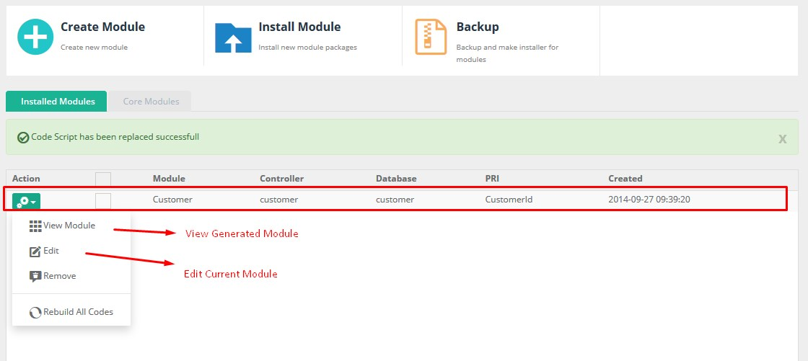
From list installed module , click button gear dropdown and click Edit module. Then you should able to see edit form and following tabs INFO , SQL , TABLE , FORM , MASTER DETAIL ,PERMISSION , REBUILD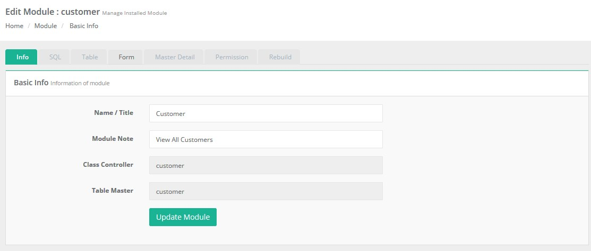
MySQL Editor
At the first time you create module, system will create automatic single query table
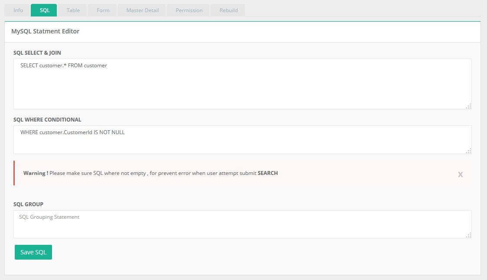
Why SXIMO BUILDER Creating automatic " WHERE employee.EmployeeId IS NOT NULL " ? this is for prevent error when users submit search form.Every fields included on query select, will be displaying at grid table including fields from join table. so make sure every field you want to show on table grid and view detail, must be on your query statement
Everytime you made changes with SQL editor , you have to rebuild Model Files
Working with join Query ( Displaying 2 or more table )
Example Join Query
SELECT customer.*,tb_users.* FROM customer LEFT JOIN tb_users ON customer.staffid = tb_users.id
If we using above statment , Grid table will automatically dispaying all SELECT statment from2 tables.
Keep in your mind , althought we can displaying table grid form 2 or more table , form , insert , edit and remove operation only affected for 1 table ( primary table )
Grid/Table
By Default , after build new module , grid will displaying all field into table
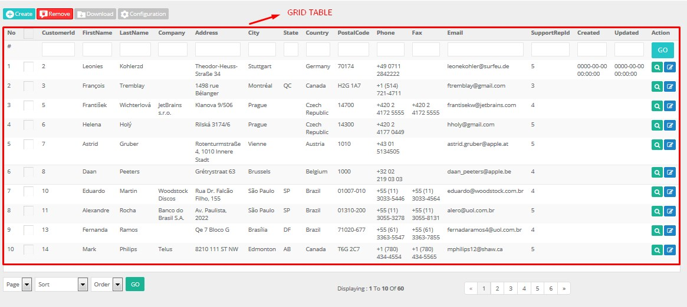
You can control Field to show ( table grid ) , view detail ( view detail page ) , sortable ( allow users to sort order by field ) , download ( include field to be downloadable )
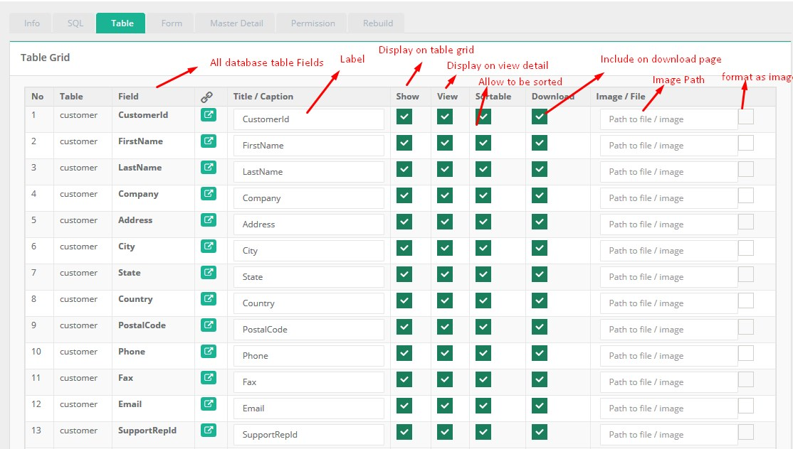
Displaying row as image
system does not store images on database, but the images are stored as a file at some directory. So make sure you create directory at uploads/your_directory_name. from image columns checkbox, checked form and put directory path uploads/your_directory_name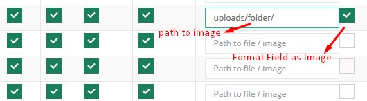
Display As ( Aliasing )
If you're not familiar with mysql syntax or getting lazzy to write query, then this feature is your solution Example, you have field user_id on your table and you want to connect with tb_users and displaying username or firstname on your grid and view detail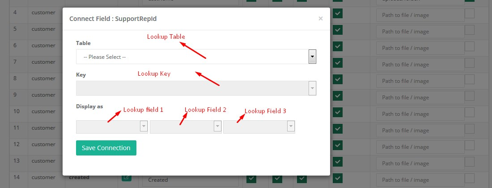
After You save display as, this will automatically work on grid table, but not for view detail. to take affect view detail, you need to rebuild View.blade.php
Form editor
Form is the most important feature from CRUD activity . Form only can work on single table , this mean you only can manage operation such insert and update into one table at the same time. At this moment , system only able to work with , Hiddem Form , Text Form , Date Form , Date Time , Select , Checkbox , Radio
Hidden
Hidden type is used for Primary Key with autoincreament
The important thing from the form is your table Must have field type auto increament. this will be KEY for insert or update row table. Now for auto increament field , you must make type form HIDDEN , NO REQUIRED and SHOW.
Text
Text type is used for collecting text or number from users
Date
Date type is used for collecting date input , the input will have popup datepicker to make sure user input right type of date . Your field table must be set as date field ( Y-m-d )
Date Time
Datetime type is used for collecting date+time input , the input will have popup datepickertime to make sure user input right type of date . Your field table must be set as date field ( Y-m-d H:i:s )
Textarea
Text type is used for collecting long text or number from users
Textarea with Editor
Text type is used for collecting long text or number from users with editor
Select
Select LookupSelect Custom Value
Select Multiple Custom Value
Select Lookup Cascade ( parent filter )
Radio
Checkbox
Upload ( File / Images )
Upload type is used for collecting image or file from users . All files and images stored at spesific folder
So make sure you create directory at uploads/your_directory_name
Master Detail
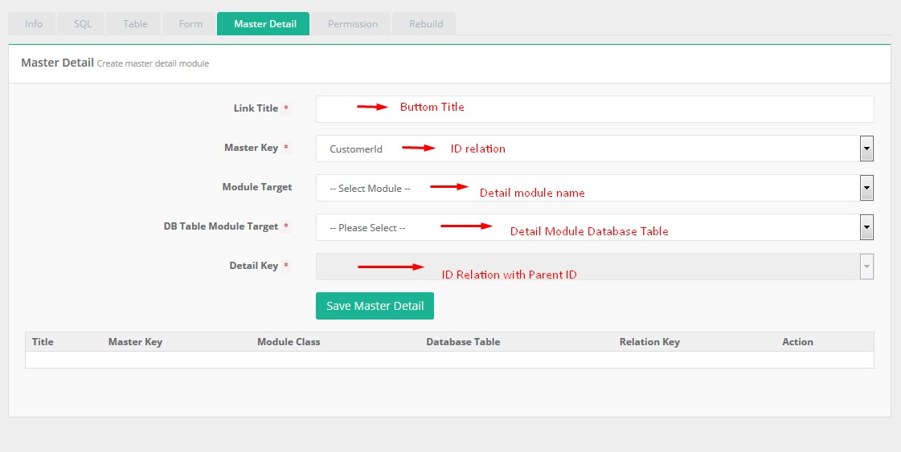
As you can see from image above , this setting is from your 1# module/table . Once u done saving master detail setting , new button will appear on 1# module grid table .
Permission
Every CRUD module will have a couples function such view grid , add , edit etc . you can control wich group are able to access thoose function
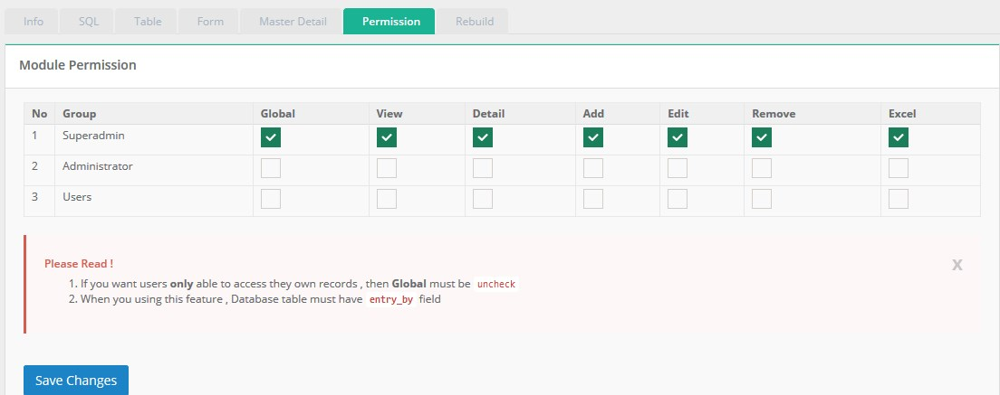
Limit users only view they own record This feature requiredentry_by (int 6) field table, if you alredy having this field on your table , then just uncheck global column , if not , then you have to add new field on primary table
Rebuild
By default at the first time you create module, system will generate files such controller , model , index, form and view . Ofcourse when application in development mode , there're possibility you made some changes from table , form grid etc. We try to cover this possibility by adding rebuild modules features
Database table syncronize
Next, when you have current module with table A then you alter table,( insert or delete fields from current database ), this will make module errorGo to : Control Panel -> Code Builder -> Your module -> Click button gear -> SQL
RE-Save your SQL stament , the system will collect new information from your table fields . Once you done , then you have to rebuild files Model , View and Form
Rebuild Form
After you made changes for setting/design you have to rebuild form files
Rebuild View Detail
After you made changes at table settting for view detail you have to rebuild view files
Rebuild Grid Table and controller
Little posibility to rebuild controller and index table, since we design controller and index table works automatic reading realtime module configuration . so when you need to rebuild both controller and index table ? Usualy when you updrade version
Backup & Install
Backup feature giving you ability to package you module into zip installer. Zip installer will contain files and folder with following structure
- Controller.php
- Model.php
- view/modules/index.blade.php
- view/modules/form.blade.php
- view/modules/inlineview.blade.php
- view/modules/view.blade.php
This feature will usable for migration / upgrade version

Zip Modules / Backup Directories
All module zipped are stored at uploads/zip folder , you can download them.Source and credit
Sximo Ajax Plugins is using following plugins